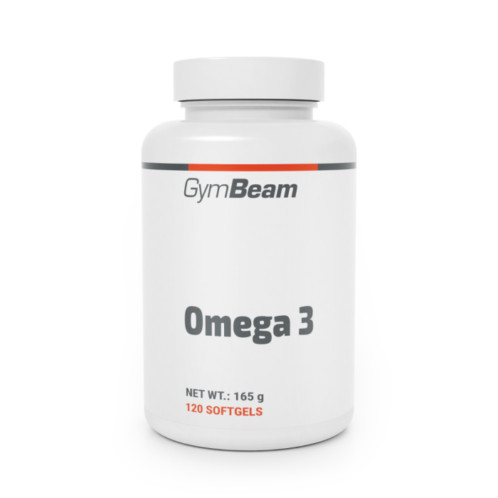

Omega 3
Omega-3 jsou zdraví prospěšné mastné kyseliny, které podporují správnou funkci srdce a mozku. Nejznámějšími typy jsou EPA a DHA, které se nacházejí hlavně v rybím oleji. Lidé je často užívají pro podporu imunity a snížení zánětů v těle. Omega-3 také přispívají k dobré náladě a lepší koncentraci. Pravidelné užívání doplňků by mělo být v souladu s doporučeným dávkováním.
Kvalitní zdroj omega-3 je důležitý pro maximální účinek. Nejlepší jsou doplňky z čistého rybího oleje nebo oleje z mořských řas. Příliš vysoké dávky mohou zvyšovat riziko krvácení, proto je vhodná opatrnost. Výrobky by měly mít dobré testování na těžké kovy a čistotu. Správně užívané omega-3 podporují srdce, mozek i celkovou vitalitu.
